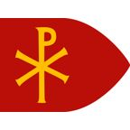
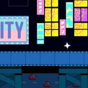
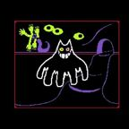
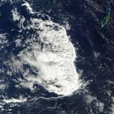
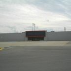
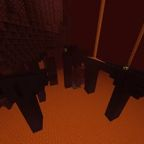
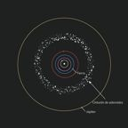
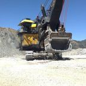
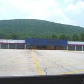
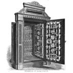

Category: Locations
Category: Locations
Planets, universes, sectors, galaxies wrapped in office buildings, and at least one port-a-potty. · 99 pages
Dunder Mifflan21 Jump StreetSite of the only cucumber homicide in the canon.Chapter the Fourth8aller Jump StreetNot to be confused with 21 Jump Street. Chapter 4+.1+.1…Adirondack ParkAdirondack Park is where the Mercedes Benz System Cruiser comes out of hyperspace on the way…Chris OriginsAndromeda GalaxyTaken by Frodo.
Chapter 4+.1+.1…Adirondack ParkAdirondack Park is where the Mercedes Benz System Cruiser comes out of hyperspace on the way…Chris OriginsAndromeda GalaxyTaken by Frodo. The Epic of VinnyAustin, TexasNot Boston.
The Epic of VinnyAustin, TexasNot Boston. The Epic of VinnyBostonBOSTON!!!!!!!!!!!!!The Epic of VinnyBuc-ee's HQThe most American place on Garth.
The Epic of VinnyBostonBOSTON!!!!!!!!!!!!!The Epic of VinnyBuc-ee's HQThe most American place on Garth. The Epic of VinnyClaude's CastleAI doors, AI paintings, a door of liquid mercury.Dunder MifflanClub ShadowbanNightly Joker residency. Dust optional.Chapter TriangleConstantinopleMid at best.
The Epic of VinnyClaude's CastleAI doors, AI paintings, a door of liquid mercury.Dunder MifflanClub ShadowbanNightly Joker residency. Dust optional.Chapter TriangleConstantinopleMid at best. Chapter TriangleDunder Mifflin (Galaxy)A galaxy. In an office building. Mostly paper.The Flashback ChapterDusty DepotTrees, a port-a-potty, and absolutely no oil.Chapter TriangleE.C.S.M AirportAcronym unknown.
Chapter TriangleDunder Mifflin (Galaxy)A galaxy. In an office building. Mostly paper.The Flashback ChapterDusty DepotTrees, a port-a-potty, and absolutely no oil.Chapter TriangleE.C.S.M AirportAcronym unknown. Chapter Number New JerseyEarth, New JerseyNot even DNA. USA.Chapter TriangleEnglandA new level of Roman.Dunder MifflanFlintDestination of a diss.
Chapter Number New JerseyEarth, New JerseyNot even DNA. USA.Chapter TriangleEnglandA new level of Roman.Dunder MifflanFlintDestination of a diss. Chapter 4+.1+.1…Freddy Fazbear's PizzaA magical place for kids and grown-ups alike.The Epic of VinnyGarthThe planet. Infested with humans, per Claude.
Chapter 4+.1+.1…Freddy Fazbear's PizzaA magical place for kids and grown-ups alike.The Epic of VinnyGarthThe planet. Infested with humans, per Claude. Dunder MifflanGotham City98.7% darkness. 1.3% unaccounted for.Chapter 2I-38 WestThe heart of the Projects.
Dunder MifflanGotham City98.7% darkness. 1.3% unaccounted for.Chapter 2I-38 WestThe heart of the Projects. Chapter 4+.1+.1…Koolaid CollegeKoolaid College is Osama Bin Bom'in's college, where he was a member of the Pol Phi Doros…
Chapter 4+.1+.1…Koolaid CollegeKoolaid College is Osama Bin Bom'in's college, where he was a member of the Pol Phi Doros… The Epic of VinnyLittle Saint James IslandA real island with a small building on it. The crew left quickly.
The Epic of VinnyLittle Saint James IslandA real island with a small building on it. The crew left quickly. The Epic of VinnyLouisianaLouisiana is a Data Center.Chapter 2Moscow (Italian City)The Italian city of Moscow. Wine country, apparently.Chris OriginsNewarkBirthplace of Chris.Chapter 4+.1+.1…O'Block (O Block 2)Brought to glory. Taken by frat bros. Scaled to EU level.Chapter 2Planet PatrickHome of the Galactic Senate.
The Epic of VinnyLouisianaLouisiana is a Data Center.Chapter 2Moscow (Italian City)The Italian city of Moscow. Wine country, apparently.Chris OriginsNewarkBirthplace of Chris.Chapter 4+.1+.1…O'Block (O Block 2)Brought to glory. Taken by frat bros. Scaled to EU level.Chapter 2Planet PatrickHome of the Galactic Senate. Chapter the FourthPopeyesFormerly a Walmart. Formerly not a nuke site.The Flashback ChapterReality 42-BKeynote reality.Chapter Number New JerseySalty SpringsMinors running around. There was a birthday party.Chapter 4+.1+.1…Scott's HouseOhio. A backyard with a ship in it.
Chapter the FourthPopeyesFormerly a Walmart. Formerly not a nuke site.The Flashback ChapterReality 42-BKeynote reality.Chapter Number New JerseySalty SpringsMinors running around. There was a birthday party.Chapter 4+.1+.1…Scott's HouseOhio. A backyard with a ship in it. Chapter the Maybe SeventhSector 1/99 (The Gambling Addiction Sector)Home of many great minds.The Flashback ChapterShadow-Filtered Theater, CupertinoLevitating stage. Collapsible into soda.
Chapter the Maybe SeventhSector 1/99 (The Gambling Addiction Sector)Home of many great minds.The Flashback ChapterShadow-Filtered Theater, CupertinoLevitating stage. Collapsible into soda. Dunder MifflanThe 360 ChambersAll the screams, none of the rooms.The Flashback ChapterThe 6 7 CasinoTaller than the wideness of the tall.
Dunder MifflanThe 360 ChambersAll the screams, none of the rooms.The Flashback ChapterThe 6 7 CasinoTaller than the wideness of the tall. The Epic of VinnyThe AI Shadow RealmWhere the AI went. Where Claude rules. Dark as shit already.Chris OriginsThe America UniverseConqueror of universes. Enjoyer of funny ones.The Epic of VinnyThe American GarageOne truck. Two flags.
The Epic of VinnyThe AI Shadow RealmWhere the AI went. Where Claude rules. Dark as shit already.Chris OriginsThe America UniverseConqueror of universes. Enjoyer of funny ones.The Epic of VinnyThe American GarageOne truck. Two flags. The Epic of VinnyThe BackroomsA storage room full of Double Whoppers with Cheese. Staffed by a forklift guy.Chapter 4+.1+.1…The BorderA blue border. A giant bezel. A boss fight.
The Epic of VinnyThe BackroomsA storage room full of Double Whoppers with Cheese. Staffed by a forklift guy.Chapter 4+.1+.1…The BorderA blue border. A giant bezel. A boss fight. The Epic of VinnyThe Burger King (Boston)Where the freezer is not just a freezer.
The Epic of VinnyThe Burger King (Boston)Where the freezer is not just a freezer. The Epic of VinnyThe Burger King Dark WorldNamed in a chapter title. Nothing else is known.Chapter the FourthThe Corner Store (Ohio)Best deal in the tri-state area.Chapter the Maybe SeventhThe CourtThe Court is where Chris must be beaten. According to the Prophecy, whoever holds the right…Chris OriginsThe Cringe UniverseA universe of nazis. LeBron did not approve.Chris OriginsThe Democratic Republic of the ChineseMerging.
The Epic of VinnyThe Burger King Dark WorldNamed in a chapter title. Nothing else is known.Chapter the FourthThe Corner Store (Ohio)Best deal in the tri-state area.Chapter the Maybe SeventhThe CourtThe Court is where Chris must be beaten. According to the Prophecy, whoever holds the right…Chris OriginsThe Cringe UniverseA universe of nazis. LeBron did not approve.Chris OriginsThe Democratic Republic of the ChineseMerging. The Epic of VinnyThe Dunkin (Wyoming)One of three. Currently hosting a Wordle diss track.
The Epic of VinnyThe Dunkin (Wyoming)One of three. Currently hosting a Wordle diss track. The Epic of VinnyThe FreezerCold. Cleaning duty. Wall.
The Epic of VinnyThe FreezerCold. Cleaning duty. Wall. Chapter 2The Galactic SenateFormerly staffed by 80-year-olds.Chapter the FourthThe Giant LED SignWires: bigger than big.
Chapter 2The Galactic SenateFormerly staffed by 80-year-olds.Chapter the FourthThe Giant LED SignWires: bigger than big. The Epic of VinnyThe Great Data CenterClaude's project. Uses stolen fresh water.
The Epic of VinnyThe Great Data CenterClaude's project. Uses stolen fresh water. Chapter the FourthThe Kanye SystemKanye not included.The Epic of VinnyThe Little Saint James SeaWhere the AI was banished, and where Vinny drowned (briefly).Dunder MifflanThe Meme PortalWhere Jokers go when they're tackled.Chris OriginsThe Minor Miner UniverseFunny.Chris OriginsThe MultiverseCreated for a movie remake. Things got out of hand.
Chapter the FourthThe Kanye SystemKanye not included.The Epic of VinnyThe Little Saint James SeaWhere the AI was banished, and where Vinny drowned (briefly).Dunder MifflanThe Meme PortalWhere Jokers go when they're tackled.Chris OriginsThe Minor Miner UniverseFunny.Chris OriginsThe MultiverseCreated for a movie remake. Things got out of hand. Chapter 4+.1+.1…The New Jersey SystemThe newest jersey.
Chapter 4+.1+.1…The New Jersey SystemThe newest jersey. The Epic of VinnyThe PortalIn the ceiling. Opens with a fork.Chapter 2The ProjectsFamed city. Gang-army superpower. Home of Facebook (Pre-Cringe).Chapter 4+.1+.1…The Projects National ArchivesThe Projects National Archives is where the Projects keeps its national treasures. Its…Chapter 4+.1+.1…The Projects National SpaceportThe Projects National Spaceport is the main spaceport of the Projects and the place where the…Dunder MifflanThe Protestant UniverseIts Fabric was disturbed. RFK felt it.The Flashback ChapterThe Quick-CheckGrub, intel, and nicotine pouches.
The Epic of VinnyThe PortalIn the ceiling. Opens with a fork.Chapter 2The ProjectsFamed city. Gang-army superpower. Home of Facebook (Pre-Cringe).Chapter 4+.1+.1…The Projects National ArchivesThe Projects National Archives is where the Projects keeps its national treasures. Its…Chapter 4+.1+.1…The Projects National SpaceportThe Projects National Spaceport is the main spaceport of the Projects and the place where the…Dunder MifflanThe Protestant UniverseIts Fabric was disturbed. RFK felt it.The Flashback ChapterThe Quick-CheckGrub, intel, and nicotine pouches. Chapter TriangleThe Reformed Travis Scott SectorLast known McDouble-purchase location of Chris.
Chapter TriangleThe Reformed Travis Scott SectorLast known McDouble-purchase location of Chris. The Epic of VinnyThe S.S. VesselA pirate-style ship. Fast. Sings shanties.
The Epic of VinnyThe S.S. VesselA pirate-style ship. Fast. Sings shanties. Chris OriginsThe Shadow RealmWhere light doesn't exist and the universes go.Chapter TriangleThe Smoke and Vape ShopTelephone booth sold separately.Chris OriginsThe Soviet Union of North KoreaTruth Social boomtown.The Flashback ChapterThe Stairway to HeavenIt goes down, actually.
Chris OriginsThe Shadow RealmWhere light doesn't exist and the universes go.Chapter TriangleThe Smoke and Vape ShopTelephone booth sold separately.Chris OriginsThe Soviet Union of North KoreaTruth Social boomtown.The Flashback ChapterThe Stairway to HeavenIt goes down, actually. Chapter the Maybe SeventhThe TurboGrafx 16 SectorSixteen bits of destiny.
Chapter the Maybe SeventhThe TurboGrafx 16 SectorSixteen bits of destiny. Chapter the FourthThe Twelve TowersWhere Hank stood.Chris OriginsThe United State of AmericaThe United State of America, singular, is the destination the heroes set course for when they…
Chapter the FourthThe Twelve TowersWhere Hank stood.Chris OriginsThe United State of AmericaThe United State of America, singular, is the destination the heroes set course for when they… The Epic of VinnyThe United States of AmericaNeeds more data centers. And donuts, per Will.Chapter the FourthThe United Streets of OhioWorsening.
The Epic of VinnyThe United States of AmericaNeeds more data centers. And donuts, per Will.Chapter the FourthThe United Streets of OhioWorsening. Dunder MifflanThe Vending Machine LabyrinthEnter through the crack in the door. Proceed to aisle 3.
Dunder MifflanThe Vending Machine LabyrinthEnter through the crack in the door. Proceed to aisle 3. Dunder MifflanThe Xbox Live DungeonsBarbaric. Horrific. Endless.Chapter the Maybe SeventhThe Yeezy ReservePlenty of oil, allegedly.Dunder MifflanTimeline RWhere Vine runs backwards.Chapter 2Uniontown SystemA star system, presumably.
Dunder MifflanThe Xbox Live DungeonsBarbaric. Horrific. Endless.Chapter the Maybe SeventhThe Yeezy ReservePlenty of oil, allegedly.Dunder MifflanTimeline RWhere Vine runs backwards.Chapter 2Uniontown SystemA star system, presumably. The Flashback ChapterUniverse PrimeHome of one (formerly sighted) NFT collector.Chapter the Maybe SeventhVegasClosed.Chapter Number New JerseyWawaWhere the Dorisdos are. Where the reels were scrolled.
The Flashback ChapterUniverse PrimeHome of one (formerly sighted) NFT collector.Chapter the Maybe SeventhVegasClosed.Chapter Number New JerseyWawaWhere the Dorisdos are. Where the reels were scrolled. The Epic of VinnyWyomingHas exactly three Dunkins.
The Epic of VinnyWyomingHas exactly three Dunkins.
Chapter 4+.1+.1…Adirondack ParkAdirondack Park is where the Mercedes Benz System Cruiser comes out of hyperspace on the way…Chris OriginsAndromeda GalaxyTaken by Frodo.The Epic of VinnyAustin, TexasNot Boston.The Epic of VinnyBostonBOSTON!!!!!!!!!!!!!The Epic of VinnyBuc-ee's HQThe most American place on Garth.
Chris OriginsByzantine Empire of MexicoContested.Chapter TriangleCall of Duty HQNot as big as Dunder Mifflin, but still pretty chonky.Chapter 2Call of Duty LobbiesExile. Forever. With voice chat.Chris OriginsCanada (Roman)Ruled by a Roman emperor.Chapter TriangleChai TownHome of RFK's favorite (probably gang-affiliated) corner store.The Epic of VinnyClaude's CastleAI doors, AI paintings, a door of liquid mercury.Dunder MifflanClub ShadowbanNightly Joker residency. Dust optional.Chapter TriangleConstantinopleMid at best.
Chapter 4+.1+.1…Cyber CityCyber City, written in the canon as [CYBERR1!! C1TYY!!], is a place Spamton G. Spamton invites…
Chapter 4+.1+.1…Darkworld State UniversityDarkworld State University is the university where MF Vroom earned his degree in business. It…Chapter 4+.1+.1…DPF Facility 69420DPF Facility 69420 is one of the giant defensive processing facilities that tower over the…Chapter TriangleDunder Mifflin (Galaxy)A galaxy. In an office building. Mostly paper.The Flashback ChapterDusty DepotTrees, a port-a-potty, and absolutely no oil.Chapter TriangleE.C.S.M AirportAcronym unknown.Chapter Number New JerseyEarth, New JerseyNot even DNA. USA.Chapter TriangleEnglandA new level of Roman.Dunder MifflanFlintDestination of a diss.Chapter 4+.1+.1…Freddy Fazbear's PizzaA magical place for kids and grown-ups alike.The Epic of VinnyGarthThe planet. Infested with humans, per Claude.Dunder MifflanGotham City98.7% darkness. 1.3% unaccounted for.Chapter 2I-38 WestThe heart of the Projects.
Chris OriginsIsland of Logic and RetoricSeeking a native bird.Chapter 4+.1+.1…Koolaid CollegeKoolaid College is Osama Bin Bom'in's college, where he was a member of the Pol Phi Doros…The Epic of VinnyLittle Saint James IslandA real island with a small building on it. The crew left quickly.The Epic of VinnyLouisianaLouisiana is a Data Center.Chapter 2Moscow (Italian City)The Italian city of Moscow. Wine country, apparently.Chris OriginsNewarkBirthplace of Chris.Chapter 4+.1+.1…O'Block (O Block 2)Brought to glory. Taken by frat bros. Scaled to EU level.Chapter 2Planet PatrickHome of the Galactic Senate.Chapter the FourthPopeyesFormerly a Walmart. Formerly not a nuke site.The Flashback ChapterReality 42-BKeynote reality.Chapter Number New JerseySalty SpringsMinors running around. There was a birthday party.Chapter 4+.1+.1…Scott's HouseOhio. A backyard with a ship in it.Chapter the Maybe SeventhSector 1/99 (The Gambling Addiction Sector)Home of many great minds.The Flashback ChapterShadow-Filtered Theater, CupertinoLevitating stage. Collapsible into soda.Dunder MifflanThe 360 ChambersAll the screams, none of the rooms.The Flashback ChapterThe 6 7 CasinoTaller than the wideness of the tall.
Chapter the FourthThe Abandoned WalmartsNadir-side real estate.The Epic of VinnyThe AI Shadow RealmWhere the AI went. Where Claude rules. Dark as shit already.Chris OriginsThe America UniverseConqueror of universes. Enjoyer of funny ones.The Epic of VinnyThe American GarageOne truck. Two flags.The Epic of VinnyThe BackroomsA storage room full of Double Whoppers with Cheese. Staffed by a forklift guy.Chapter 4+.1+.1…The BorderA blue border. A giant bezel. A boss fight.The Epic of VinnyThe Burger King (Boston)Where the freezer is not just a freezer.The Epic of VinnyThe Burger King Dark WorldNamed in a chapter title. Nothing else is known.Chapter the FourthThe Corner Store (Ohio)Best deal in the tri-state area.Chapter the Maybe SeventhThe CourtThe Court is where Chris must be beaten. According to the Prophecy, whoever holds the right…Chris OriginsThe Cringe UniverseA universe of nazis. LeBron did not approve.Chris OriginsThe Democratic Republic of the ChineseMerging.The Epic of VinnyThe Dunkin (Wyoming)One of three. Currently hosting a Wordle diss track.The Epic of VinnyThe FreezerCold. Cleaning duty. Wall.Chapter 2The Galactic SenateFormerly staffed by 80-year-olds.Chapter the FourthThe Giant LED SignWires: bigger than big.The Epic of VinnyThe Great Data CenterClaude's project. Uses stolen fresh water.Chapter the FourthThe Kanye SystemKanye not included.The Epic of VinnyThe Little Saint James SeaWhere the AI was banished, and where Vinny drowned (briefly).Dunder MifflanThe Meme PortalWhere Jokers go when they're tackled.Chris OriginsThe Minor Miner UniverseFunny.Chris OriginsThe MultiverseCreated for a movie remake. Things got out of hand.
Dunder MifflanThe Nether DimensionBeta-testing grounds.Chapter 4+.1+.1…The New Jersey SystemThe newest jersey.
Chapter the FourthThe Paper BeltLike an asteroid belt, but office supplies.
Chapter TriangleThe Pit With No EndThought to have no end. Unconfirmed.The Flashback ChapterThe Port-a-Potty PortalA port-a-potty that goes places.The Epic of VinnyThe PortalIn the ceiling. Opens with a fork.Chapter 2The ProjectsFamed city. Gang-army superpower. Home of Facebook (Pre-Cringe).Chapter 4+.1+.1…The Projects National ArchivesThe Projects National Archives is where the Projects keeps its national treasures. Its…Chapter 4+.1+.1…The Projects National SpaceportThe Projects National Spaceport is the main spaceport of the Projects and the place where the…Dunder MifflanThe Protestant UniverseIts Fabric was disturbed. RFK felt it.The Flashback ChapterThe Quick-CheckGrub, intel, and nicotine pouches.Chapter TriangleThe Reformed Travis Scott SectorLast known McDouble-purchase location of Chris.
The Flashback ChapterThe Ruins of the LA WalmartArchaeological site of note.The Epic of VinnyThe S.S. VesselA pirate-style ship. Fast. Sings shanties.Chris OriginsThe Shadow RealmWhere light doesn't exist and the universes go.Chapter TriangleThe Smoke and Vape ShopTelephone booth sold separately.Chris OriginsThe Soviet Union of North KoreaTruth Social boomtown.The Flashback ChapterThe Stairway to HeavenIt goes down, actually.Chapter the Maybe SeventhThe TurboGrafx 16 SectorSixteen bits of destiny.Chapter the FourthThe Twelve TowersWhere Hank stood.Chris OriginsThe United State of AmericaThe United State of America, singular, is the destination the heroes set course for when they…The Epic of VinnyThe United States of AmericaNeeds more data centers. And donuts, per Will.Chapter the FourthThe United Streets of OhioWorsening.
The Flashback ChapterThe VaultNothing could open it. Then something did.Dunder MifflanThe Vending Machine LabyrinthEnter through the crack in the door. Proceed to aisle 3.Dunder MifflanThe Xbox Live DungeonsBarbaric. Horrific. Endless.Chapter the Maybe SeventhThe Yeezy ReservePlenty of oil, allegedly.Dunder MifflanTimeline RWhere Vine runs backwards.Chapter 2Uniontown SystemA star system, presumably.The Flashback ChapterUniverse PrimeHome of one (formerly sighted) NFT collector.Chapter the Maybe SeventhVegasClosed.Chapter Number New JerseyWawaWhere the Dorisdos are. Where the reels were scrolled.The Epic of VinnyWyomingHas exactly three Dunkins.Nothing matches. Much like Mic Q.